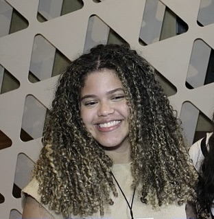
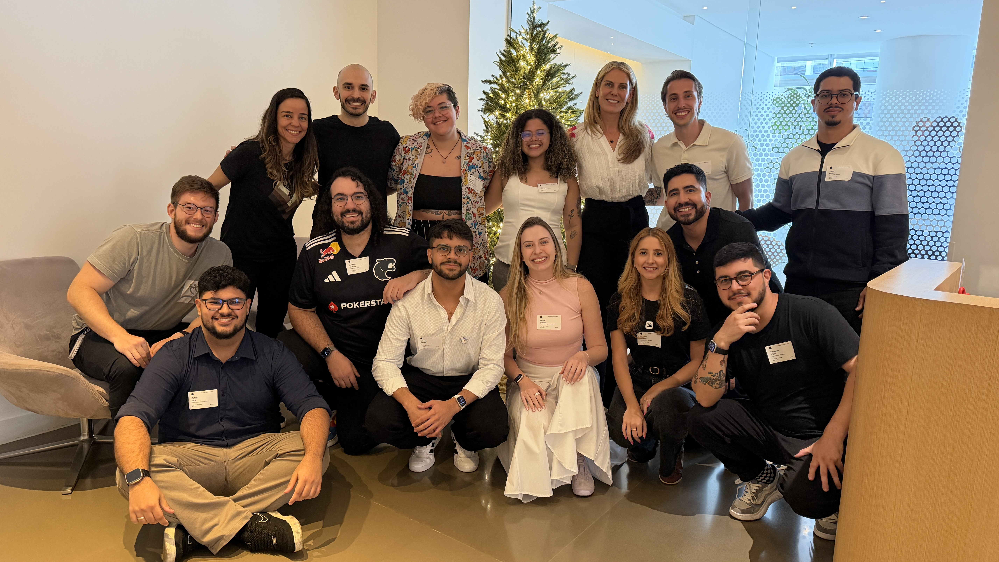
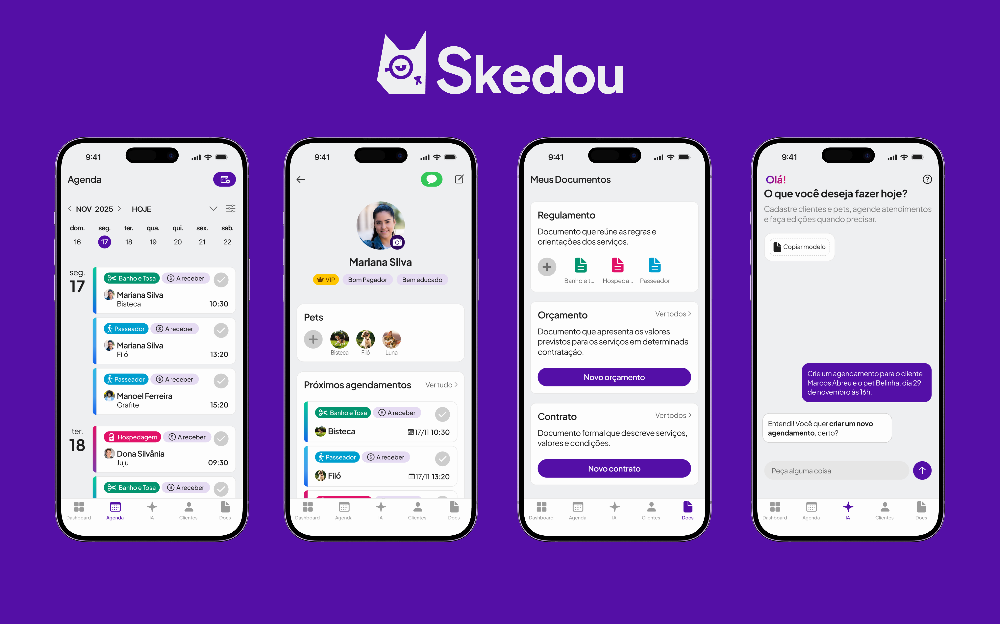
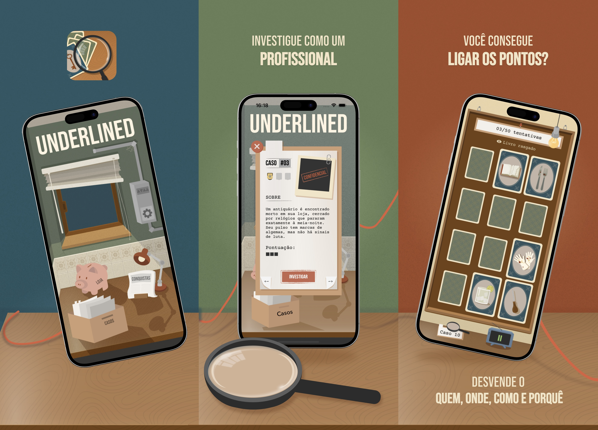
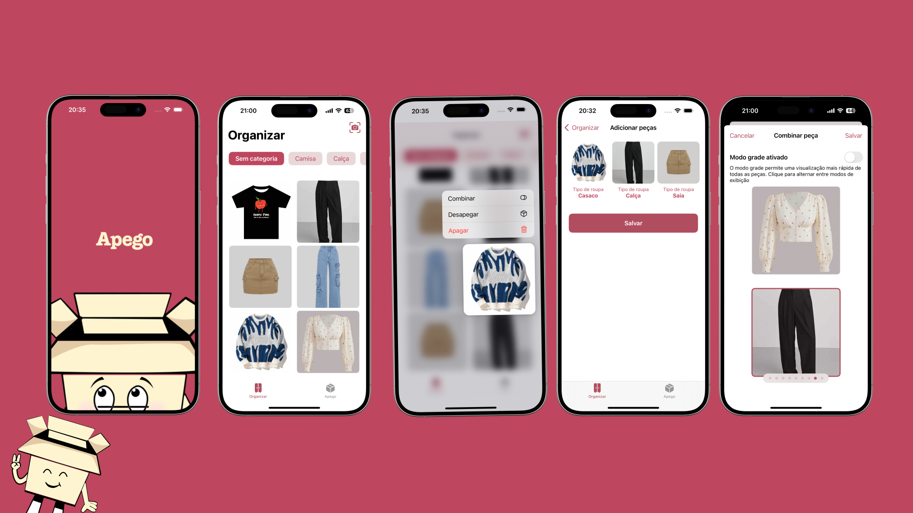
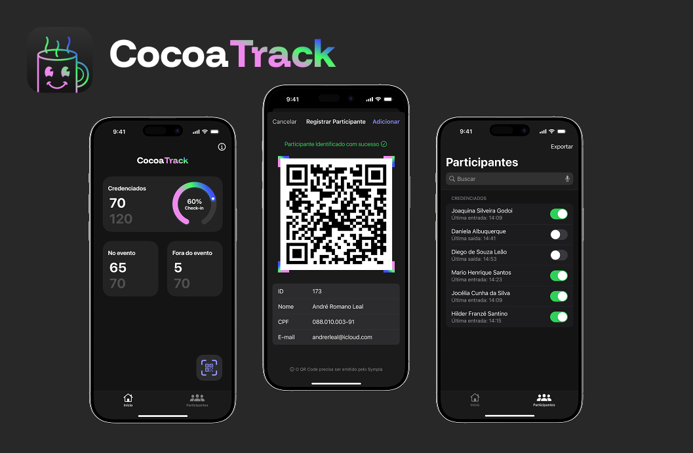
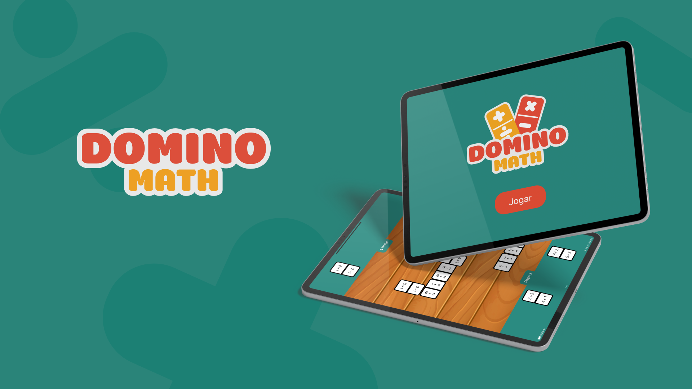

Aplicativos iOS
Do primeiro protótipo até a App Store: interface, persistência de dados e as decisões chatas que ninguém vê, mas que fazem o app não travar.
Desenvolvedora de Software
Sou Taissa, estudante de Engenharia de Computação. Desenvolvo para iOS e web com Swift, SwiftUI, React e TypeScript,com aplicativos publicados na App Store.
Fortaleza, CE • Brasil

Sou desenvolvedora de software e graduanda em Engenharia de Computação. Tenho paixão por criar aplicativos e explorar novas tecnologias. Construí minha base técnica no ecossistema Apple (iOS/Swift) na Apple Developer Academy, onde também tive a honra de atuar como embaixadora da turma 24-25. Atualmente, expando meu leque técnico trabalhando com desenvolvimento Front-End Web no Grupo de Comunicação O POVO.
Acredito muito no poder da colaboração. Por isso, atuo como Diretora do CocoaHeads Fortaleza, gosto da parte de organizar espaço pra outras pessoas trocarem ideia técnica, acho que boa parte do que aprendi de tecnologia de verdade veio de conversa, não só de documentação.
Ver currículoCada decisão técnica carrega uma decisão de produto junto.
Do primeiro protótipo até a App Store: interface, persistência de dados e as decisões chatas que ninguém vê, mas que fazem o app não travar.
React e TypeScript para transformar dado bruto em informação que alguém consegue entender em três segundos, olhando de relance.
Acessibilidade e UI não são “acabamento”. São parte do problema que estou resolvendo, não um passo depois de resolvê-lo.

Gosto de entender o problema antes de escolher a solução. Isso me ajuda a construir interfaces mais claras, fluxos mais simples e código com propósito.
Trabalho bem em colaboração, valorizo feedback e levo cada projeto como uma oportunidade de aprender enquanto entrego algo útil e bem cuidado.
O problema: acompanhar a atuação dos deputados federais do Ceará exige consultar dados públicos que nem sempre chegam organizados para leitura rápida.
O que decidi: organizei a listagem e os detalhes em uma interface responsiva, consultando informações sob demanda e mantendo em cache os dados já carregados.
Resultado: uma aplicação editorial que reúne deputados, frentes parlamentares e informações detalhadas a partir da API de Dados Abertos da Câmara.


O problema: profissionais de pet care precisam acompanhar agenda e clientes sem espalhar informações entre ferramentas diferentes.
O que decidi: centralizei agenda, clientes e automações em uma experiência nativa, estruturada com SwiftUI, SwiftData e Clean Architecture.
Resultado: aplicativo publicado na App Store, com uma base escalável para organizar a rotina desses profissionais.

O problema: criar um jogo de memória que não terminasse na repetição das cartas e sustentasse o interesse com narrativa e progressão.
O que decidi: combinei pistas investigativas, animações e progressão, integrando Game Center, CloudKit e StoreKit à experiência.
Resultado: jogo publicado na App Store, com conquistas e dados salvos na nuvem para manter a continuidade entre sessões.

O problema: organizar peças de roupa exige cadastro manual, mesmo quando a própria imagem já contém boa parte da informação necessária.
O que decidi: usei Core ML para classificar as peças a partir de fotos e conectei captura, identificação e categorias em um único fluxo.
Resultado: aplicativo publicado na App Store que transforma uma imagem em uma peça identificada e organizada por categoria.

O problema: adaptar a lógica de um jogo para computação espacial sem tratar o ambiente 3D como uma tela tradicional ampliada.
O que decidi: combinei interfaces bidimensionais, objetos 3D, poções e gestos naturais usando SwiftUI, visionOS e Reality Composer Pro.
Resultado: uma experiência para Apple Vision Pro em que a interação espacial faz parte da mecânica, não apenas da apresentação.

O problema: validar participantes de eventos manualmente torna o check-in lento e aumenta a chance de inconsistências.
O que decidi: conectei a leitura de QR Code à API do Sympla para consultar e validar cada inscrição durante o check-in.
Resultado: aplicativo iOS com validação em tempo real para tornar a entrada nos eventos CocoaHeads mais direta e confiável.

O problema: praticar conceitos matemáticos básicos pode parecer abstrato e pouco convidativo, especialmente em uma experiência infantil.
O que decidi: transformamos as peças de dominó em desafios matemáticos, combinando regras simples, feedback visual e uma interface fácil de usar.
Resultado: aplicativo iOS desenvolvido em equipe durante o Foundation da Apple Developer Academy, com uma experiência lúdica de aprendizagem.

Projetos menores, mas que mostram o mesmo raciocínio: entender o problema antes de escolher a stack.
Estou em busca de um lugar pra aplicar o que venho aprendendo na prática, de preferência em times de Front-End, Mobile ou iOS. Se meu perfil conversar com o que vocês precisam, me chama.